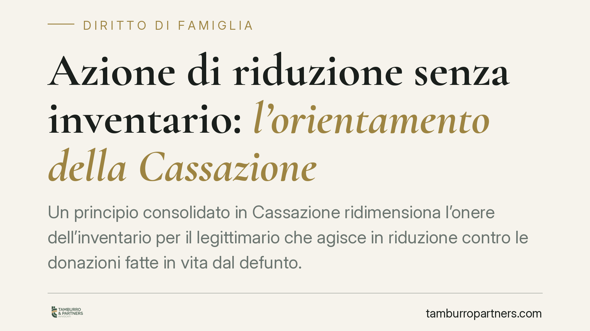

Azione di riduzione senza inventario: l'orientamento della Cassazione
Un principio consolidato in Cassazione ridimensiona l'onere dell'inventario per il legittimario che agisce in riduzione contro le donazioni fatte in vita dal defunto. La questione è tecnica ma incide su casi frequenti: patrimoni quasi svuotati da liberalità anteriori, con conti correnti pressoché vuoti al momento del decesso. Vediamo cosa cambia davvero e quali sono i limiti da conoscere.

Il contesto
Capita spesso che, alla morte di un genitore, i figli scoprano che il patrimonio è stato in gran parte trasferito in vita tramite donazioni. Al momento dell'apertura della successione resta poco o nulla: conti correnti prosciugati, immobili già intestati ad altri. In questi casi il legittimario che si sente leso può reagire con l'azione di riduzione.
La Cassazione ha da tempo elaborato un orientamento che, in situazioni specifiche, alleggerisce gli oneri formali gravanti su chi agisce. È bene però leggere il principio nella sua esatta portata, senza generalizzazioni fuorvianti.
Inquadramento normativo
Tre nozioni chiave.
Legittimario: è il familiare più stretto (coniuge, figli, in mancanza di figli gli ascendenti) al quale la legge riserva una quota di eredità intangibile, la cosiddetta quota di legittima. Nessuna donazione o testamento può privarlo di questa quota.
Azione di riduzione: è lo strumento processuale con cui il legittimario leso chiede che vengano ridotte le donazioni e le disposizioni testamentarie eccedenti la quota disponibile, per reintegrare la propria legittima. Si prescrive in dieci anni, secondo l'orientamento consolidato decorrenti dall'apertura della successione.
Beneficio d'inventario: è la modalità di accettazione dell'eredità che tiene separato il patrimonio del defunto da quello dell'erede, evitando che quest'ultimo risponda dei debiti oltre il valore ereditato.
L'art. 564, comma 1, c.c. subordina l'esercizio dell'azione di riduzione, per l'erede che abbia accettato l'eredità, all'accettazione con beneficio d'inventario. Su questa disposizione si concentra il punto delicato.
Il principio e i suoi limiti
La distinzione decisiva riguarda la posizione del legittimario.
Il legittimario totalmente pretermesso – cioè completamente escluso dalla successione, che non riceve nulla né per testamento né per legge – non è chiamato all'eredità. Di conseguenza, secondo l'orientamento della Cassazione, non deve accettare con beneficio d'inventario: la condizione dell'art. 564 c.c. semplicemente non lo riguarda, perché acquista la qualità di erede solo per effetto vittorioso dell'azione di riduzione.
Diverso è il caso del legittimario che ha accettato l'eredità: per lui l'onere dell'inventario resta la regola, salvo le eccezioni interpretative che la giurisprudenza riconosce quando l'accettazione beneficiata risulterebbe priva di funzione pratica, ad esempio perché il relitto (i beni residui al momento della morte) è irrisorio rispetto alle donazioni da ridurre.
È questo il nucleo che va maneggiato con cautela. Non si tratta di un via libera generalizzato all'azione di riduzione senza formalità. Si tratta di orientamenti che vanno calati nella singola vicenda: qualità del soggetto, modalità di accettazione, consistenza effettiva del patrimonio residuo. La valutazione è sempre caso per caso.
Implicazioni pratiche
Per chi si trova con una legittima lesa da donazioni anteriori, il quadro migliora sotto un profilo concreto: l'esigenza di redigere un inventario formale su un patrimonio ormai svuotato appariva spesso un adempimento inutile e costoso. L'orientamento della Cassazione riconosce che, in determinate condizioni, questo passaggio non può trasformarsi in un ostacolo insormontabile all'accesso alla tutela.
Resta però centrale l'accertamento della propria posizione. Un conto è essere del tutto pretermessi, un conto è aver ereditato qualcosa e voler recuperare il resto. Le conseguenze processuali sono diverse.
Cosa fare in concreto
- Verificate la vostra qualifica: accertate se siete legittimari totalmente pretermessi o eredi che hanno già accettato. La strategia processuale dipende da questa distinzione.
- Ricostruite le donazioni: raccogliete atti di donazione, trasferimenti immobiliari e liberalità indirette compiute in vita dal defunto. Sono la base del calcolo della lesione.
- Fotografate il relitto: verificate la consistenza dei beni presenti al momento del decesso, inclusi saldi di conto e titoli.
- Presidiate i termini: l'azione di riduzione si prescrive in dieci anni dall'apertura della successione. Non lasciate maturare il termine.
- Chiedete una valutazione preliminare: prima di scegliere se e come accettare l'eredità, consigliamo un esame tecnico della posizione, perché una scelta affrettata sull'accettazione può pregiudicare l'azione.
Conclusione
L'orientamento richiamato offre un margine di semplificazione, ma non sostituisce l'analisi puntuale del singolo caso. La corretta qualificazione della posizione del legittimario e la ricostruzione documentale restano i due presidi da cui dipende l'esito.
---
Contributo informativo a cura di Tamburro & Partners – Avv. Giuseppe Tamburro. Non costituisce parere legale.
Ogni famiglia ha il suo equilibrio.
Separazione, divorzio, affidamento, assegno: se vuoi un confronto riservato su una specifica situazione, scrivi allo studio. Ti rispondiamo entro un giorno lavorativo.